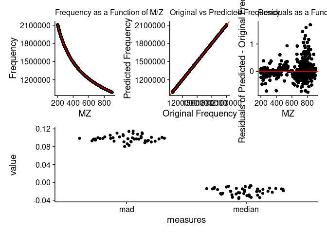
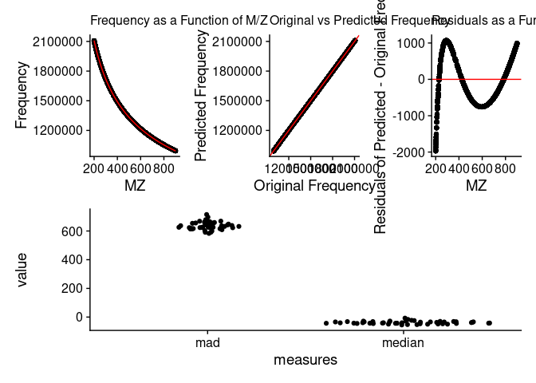

The goal of the ScanCentricPeakCharacterization package is to facilitate scan-centric, frequency based, peak characterization of profile level, multi-scan, direct-injection Fourier-transform mass spectrometry data.
You can read more about the merits of this scan-centric method in:
RM Flight, JM Mitchell & HNB Moseley, “Scan-Centric, Frequency-Based Method for Characterizing Peaks from Direct Injection Fourier transform Mass Spectrometry Experiments”, bioRxiv, doi: https://doi.org/10.1101/2022.04.14.488423
License
This package is licensed with a BSD-like license with a 4th clause: No commercial use.
Academics who want to use it at their institution, please try it.
If you are at a business / for-profit and want to use it, please contact the authors (Robert Flight, rflight79 at gmail; Hunter Moseley, hunter dot moseley at gmail) about licensing. Please contact us even if you aren’t sure what would be required for licensing, we do want people to use it.
Installation
You can install ScanCentricPeakCharacterization from GitHub with:
# install.packages("remotes")
remotes::install_github("MoseleyBioinformaticsLab/ScanCentricPeakCharacterization")Documentation Site
You can browse the documentation online here.
Theory
Converting m/z to Frequency
Outside of the scan-centric nature of this peak-characterization, the second most important feature is the conversion from m/z to frequency. This is done to make evenly spaced data. If you acquire Orbitrap / ICR type mass spectrometry data over any decent range, there is an increasing spacing between individual m/z points.
We will load up an example direct-injection lipidomics sample acquired on a Thermo-Fisher Fusion instrument to demonstrate.
mzml_lipid = SCMzml$new(system.file("extdata/lipid_example.mzML", package = "ScanCentricPeakCharacterization"))
mzml_lipid$extract_mzml_data()
mzml_lipid$predict_frequency()
mzml_lipid$mzml_df_data[[1]] %>%
dplyr::filter(convertable) %>%
ggplot(aes(x = mz, y = mean_offset)) +
geom_point()
We can see here that the difference or offset of m/z points is increasing with m/z.
In contrast, frequency is defined as the difference over m/z, and therefore is constant.
mz_{mean} = mean(mz_{p1}, mz_{p2})
mz_{diff} = mz_{p2} - mz_{p1}
frequency = \frac{mz_{mean}}{mz_{diff}}
mzml_lipid$mzml_df_data[[1]] %>%
dplyr::filter(convertable) %>%
ggplot(aes(x = mean_frequency, y = mean_freq_diff)) +
geom_point()However, we can more generally define the conversion of m/z to frequency using a linear model of the form:
frequency = a + \frac{x}{mz} + \frac{y}{\sqrt{mz}} + \frac{z}{\sqrt[3]{mz}}
And we can verify that with a plot of the m/z vs frequency and their predicted values, in a couple of ways, as well as a plot of the residuals.
mzml_lipid$check_frequency_model()See the example of SCRaw below to see how we can change the model being used.
Basic Objects and Classes
SCCharacterizePeaks
SCCharacterizePeaks controls the overall interplay between:
- the
SCZipcontainer that will hold the original and final data; - the
SCMzmlobject that loads mzml data, transforms it to frequency space, and filters out scans that don’t seem to belong; - the
SCPeakRegionandSCPeakRegionFinderthat actually do all of the peak characterization.
It also has the ability to do the first preparation steps of the data and check that the frequency model is appropriate.
Let’s give an example using an example lipid file.
lipid_sample = system.file("extdata", "lipid_example.mzML", package = "ScanCentricPeakCharacterization")
sc_char = SCCharacterizePeaks$new(lipid_sample, out_file = here::here("lipid_sample.zip"))
sc_char$load_file()
sc_char$prepare_mzml_data()Check Frequency Model
And now we can check that our frequency model should work for the rest of the steps.
sc_char$check_frequency_model()
If the frequency model was wrong, then we should instantiate a new one with a different model.
freq_model = c("a.freq" = 0, "x.freq" = -1, "y.freq" = -1/2, "z.freq" = -1/3)
freq_model2 = c("a.freq" = 0, "x.freq" = -1, "y.freq" = -1/3)
sc_char$set_frequency_fit_description(freq_model2)
sc_char$predict_frequency()
sc_char$check_frequency_model()
This model is definitely incorrect. We can see this from the plot of residuals by m/z, and the MAD (median absolute deviations) and median differences of the residuals across the scans are very, very high.
sc_char$set_frequency_fit_description(freq_model)
sc_char$predict_frequency()Check Scans Kept
We can also check which peaks were excluded by examining the scan_info data.frame.
scan_info = sc_char$scan_info()
head(scan_info)
#> scanIndex scan polarity rtime tic rtime_lag rtime_lead rtime_keep y_freq_keep
#> 1 1 s.01 1 0.8358959 429046848 NA 11.06028 TRUE TRUE
#> 2 2 s.02 1 11.8961766 282278784 11.06028 11.07281 TRUE TRUE
#> 3 3 s.03 1 22.9689818 439026304 11.07281 11.04548 TRUE TRUE
#> 4 4 s.04 1 34.0144615 429789920 11.04548 11.04705 TRUE TRUE
#> 5 5 s.05 1 45.0615118 433693216 11.04705 11.04636 TRUE TRUE
#> 6 6 s.06 1 56.1078670 429844288 11.04636 11.04656 TRUE TRUE
#> stats_keep keep mad median a.freq x.freq y.freq z.freq a.mz x.mz
#> 1 TRUE TRUE 0.09488578 -0.01991055 -36.29313 4339.548 29800864 1070.974 0.003203856 -19081.56
#> 2 TRUE TRUE 0.11431756 -0.02607351 -42.73811 5607.854 29800327 1289.635 0.003874297 -22330.45
#> 3 TRUE TRUE 0.08638029 -0.01477036 -37.93255 4734.174 29800719 1129.750 0.002996038 -18154.25
#> 4 TRUE TRUE 0.09700394 -0.03144327 -37.61949 4656.438 29800744 1119.253 0.004465065 -24589.24
#> 5 TRUE TRUE 0.08886880 -0.01449103 -35.80378 4281.555 29800892 1056.818 0.003222591 -19116.27
#> 6 TRUE TRUE 0.10315704 -0.01284821 -41.00362 5388.045 29800458 1236.099 0.004144753 -23243.80
#> y.mz z.mz
#> 1 8.882685e+14 -1.900395e+16
#> 2 8.882729e+14 -2.130416e+16
#> 3 8.882673e+14 -1.836750e+16
#> 4 8.882763e+14 -2.247840e+16
#> 5 8.882683e+14 -1.894065e+16
#> 6 8.882745e+14 -2.166934e+16
scan_info %>%
ggplot(aes(x = rtime, xend = rtime, y = 0, yend = tic, color = keep)) +
geom_segment()We can see that several scans were excluded by being too high in their retention time (rtime), and then two were outliers based on the statistics of the frequency square root coefficient.
If this isn’t doing what we want, we can define a different scan-filtering function that does more along the lines of what we want. See the documentation about add_scan_info() using ?add_scan_info to see what is generally available.
Run Peak Characterization
Once we are happy with how we have set up the SCCharacterizePeaks object, we can run the peak characterization.
# not run
sc_char$find_peaks()Run Everything
If you’ve already examined the model, and have your function for filtering scans all set up, then you can run everything on your sample rather quickly using this simple command:
# not run
sc_char = SCCharacterizePeaks$new("file.mzML", out_file = "file.zip")
sc_char$run_all()SCMzml
SCMzml is responsible for loading the raw data, holding per-scan metadata, extracting the scan-level m/z and intensity, converting them to frequency, and filtering any scans out. Although the user should not have to interact with it much, and normally it is controlled by SCCharacterizePeaks, we mention it here so that the user knows it exists.
SCPeakRegionFinder
SCPeakRegionFinder is similar to SCCharacterizePeaks in that it is more of a controlling workflow object. It serves to coordinate all the steps that need to happen for peak characterization outside of the conversion to frequency, which is the purview of the SCMzml object. The SCPeakRegionFinder acts on the SCPeakRegions object, which has all of the data and methods.
SCPeakRegions
SCPeakRegions holds the frequency data and the methods. It is controlled by SCPeakRegionFinder.
SCZip
We wanted a fairly generic way to store the original mzML file, any metadata generated about it, the binary output of SCPeakRegionFinder, and a JSONized peak list that can be used for assignment. What we decided on was a simple zip file that keeps those objects together. When we create a new SCZip, we actually create a temp directory, and move all the data there, and unzip it so that it is easily accessible and pieces can be modified easily.